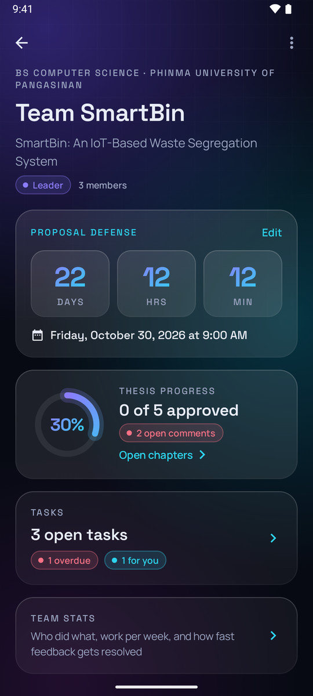
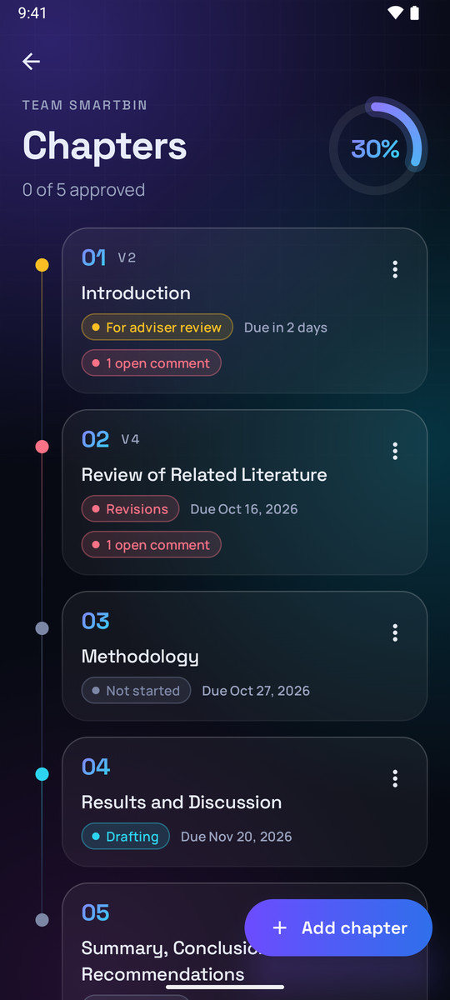
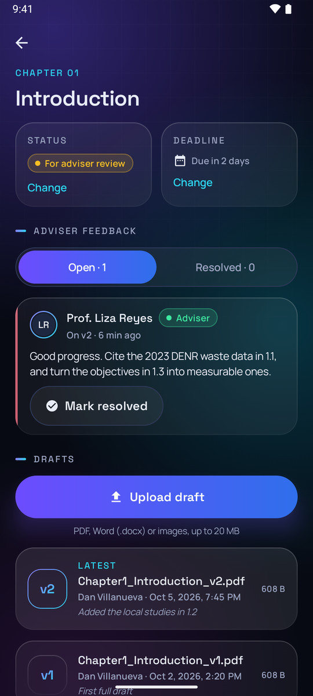
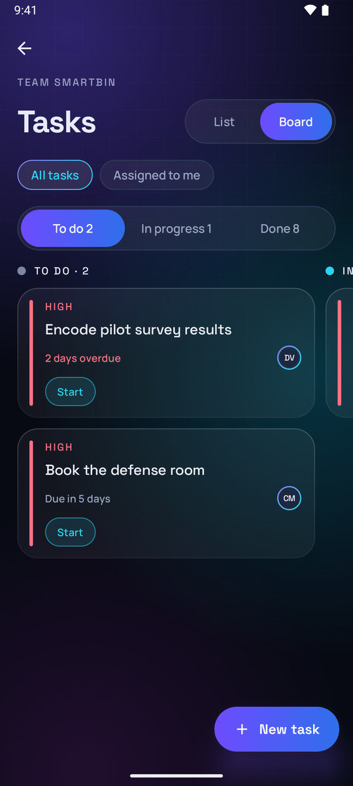
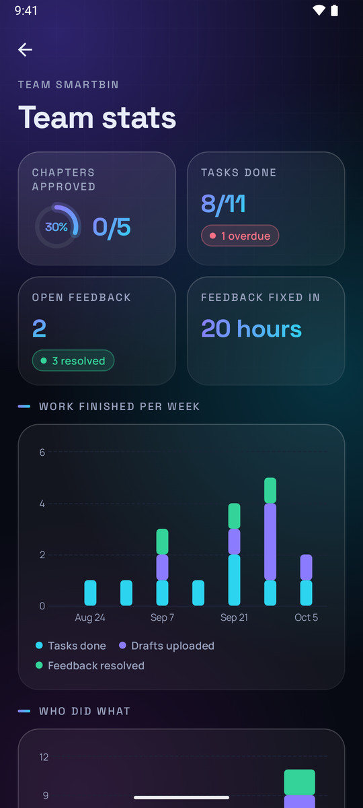
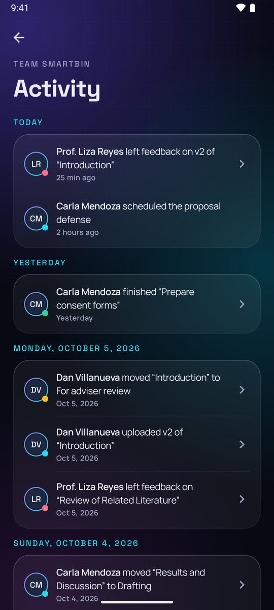
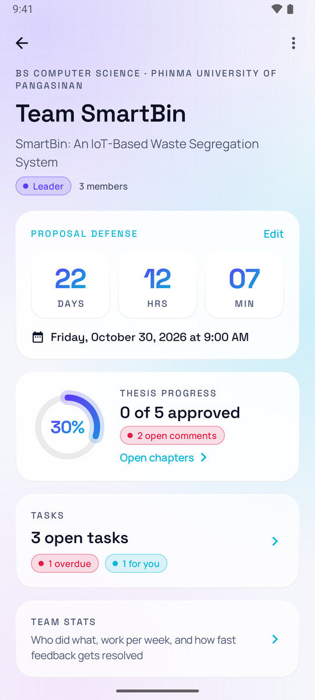

Personal project · Android app · 2026
ThesisFlow
A thesis manager for college groups and their adviser: who is doing what, which chapters are done, what the adviser said, and what is due next. A portfolio project I built solo, from the database to the security rules.
- My role
- Full-stack developer, solo
- Builds
- Cloud and local
- Tests
- 142 unit · 59 rules · 26 on-device
- Phases
- 7 of 7 done
CodePublic on GitHub ↗, with a README that walks through running it.
Try it on your phone
The local build keeps everything on the phone, with no account and no internet. It opens with a sample thesis group, so you can switch between the leader, the members and the adviser and see what each one may do.

Overview
Chapters
Feedback
Task board
Team stats
Activity
Light themeDecisions that mattered
-
Three modules, one direction
The domain module is plain Kotlin with no Android or Firebase imports; the data module implements its interfaces; the app only sees use cases, so most tests run on the JVM without a device.
-
Works without a signal
Screens read from Room. A sync manager copies Firestore in while the app is open, and uploads wait in a WorkManager queue until there is a connection.
-
The server decides who can do what
Security rules give each role its limits: only leaders and advisers approve chapters, members move only their own tasks, only advisers post feedback. 59 tests run the rules against the emulators; writing them closed two gaps.
-
A feed nobody can fake
Activity entries are written only by Cloud Functions, with the actor taken from fields the rules enforce and the event id as the key, so a retry can't post twice. They expire after 180 days.
-
Two builds, one codebase
A cloud build on Firebase and a local build that keeps everything on the phone. The local one does the cloud functions' jobs on the device and ships a sample group, which is what you can try above.
-
Checked on every push
GitHub Actions runs the unit tests, a debug build, the security-rule tests and the Cloud Functions build on every push.
Design
An "aurora glass" look of its own: a deep-space background with soft violet and cyan light, glass cards, a glowing progress ring and a chapter timeline, set in Space Grotesk and Manrope, in dark and light themes.